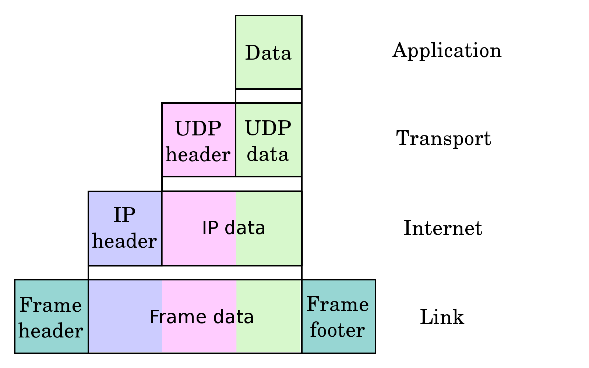
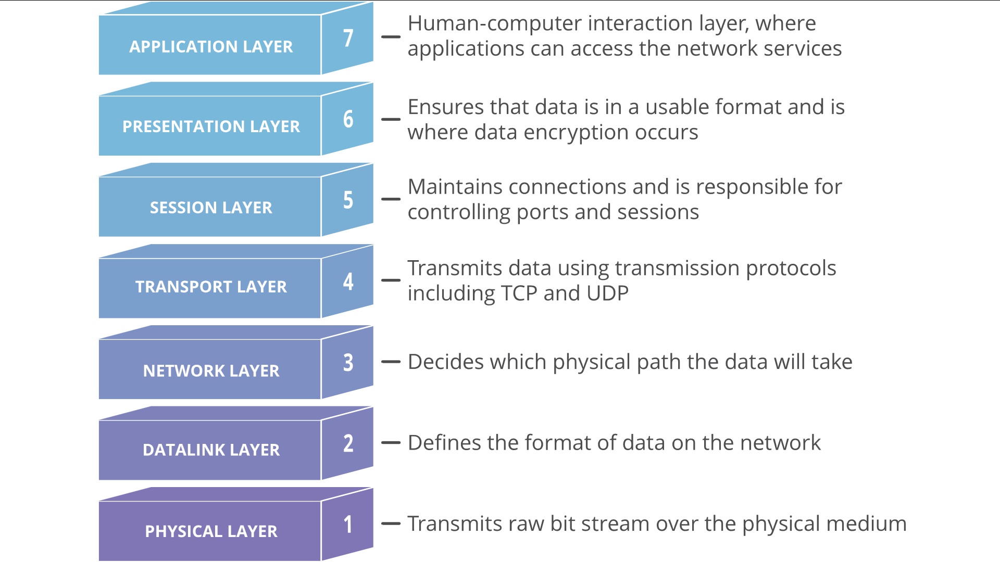

Computer Networks

What is computer network?
In general, the computer network is a collection that connects all the distributed computing systems all over the world. It is mainly composed of two main subjects, one of which is the computer, the modern electrical device that we use everyday. Another is the “network”, aiming at providing intercommunication of information between computers.
How does the network works?
It turns out that information can only be sent given the hosts’ IP addresses, port numbers, and protocols. To easily understand these concepts, you can think of the computer networks as the delivery system. The communicating process is similar to the action of you writing a letter to your friend. The language that you use is the “protocol”, your friend’s home address is the “IP address”, and the mailbox number is the “port number”.
Internet Protocols
The Internet Protocol (IP) is the principal communications protocol in the Internet protocol suite for relaying datagrams across network boundaries. Its routing function enables internetworking, and essentially establishes the Internet. Below is the diagram of how UDP protocol encapsulates data.
The OSI (Open Systems Interconnection) Model
The OSI Model is a framework that describes the architecture of the current Internet, which includes an abstraction of 7 distinct layers, each performing unique tasks in data transfer and information exchange. Below is the OSI model diagram.
All of our daily activities on the Internet are based on these 7 layers. These make up the fundamental media that cyber spaces built on.